TUTORIAL
チュートリアル：受注管理を改良してみよう
練習用のサンプル（小さな受注管理のデータベース）を使って、関数を作る → 動かす → 間違いを直す → 帳票を直す → テストを書く → AI に頼む、までを手を動かして体験します。
はじめに
このチュートリアルでは、説明は最小限にして、まず動かしてみることを大切にしています。「なぜそうなるのか」は、終わった後に学習コースで学べます。ボタンの意味を調べたいときはリファレンスを引いてください。
- 各ステップの最後にある 「ここまでできたら OK」 で、うまくいったか確かめながら進みます
- うまくいかないときは、各ステップの 「うまくいかないとき」 を開いてください
- 画面の画像は、このチュートリアルを実際に進めたときのものです（クリックで拡大）
0. 準備 10 分
ゴール：練習用サンプルを VS Code で開き、左の Access アイコンからサイドバーを表示する。
- 拡張機能をインストールする（まだの場合）VS Code の［ターミナル］→［新しいターミナル］で次を実行します。
終わったら Ctrl+Shift+P を押し、cd C:\work\access-vscode powershell -NoProfile -ExecutionPolicy Bypass -File .\build-vsix.ps1 -InstallReload Windowと入力して Enter（VS Code の再読み込み）。 - 左端の Access アイコンを押すデータベースのアイコンに「A」が付いたものです。
- 「練習用サンプルを作る」を押すサイドバーの「その他」の中、またはデータベースがまだないときに出る案内の中にあります。作る場所（例：ドキュメント）を選ぶと、その中に
AccessVSC-練習フォルダができ、shop.accdbが作られます。 - 「開く」を押す新しい VS Code のウィンドウでサンプルのフォルダが開きます。以降はこのウィンドウで作業します。
サンプルの中身
| 種類 | 名前 | 内容 |
|---|---|---|
| テーブル | Customers / Products / Orders | 顧客 5 件 / 商品 4 件 / 受注 7 件 |
| クエリ | qryOrderList | 受注一覧（顧客名・商品名・金額つき） |
| フォーム | frmCustomers | 顧客の入力画面 |
| レポート | rptOrders | 受注一覧の帳票 |
| モジュール | modMain | あいさつの関数 Greet |
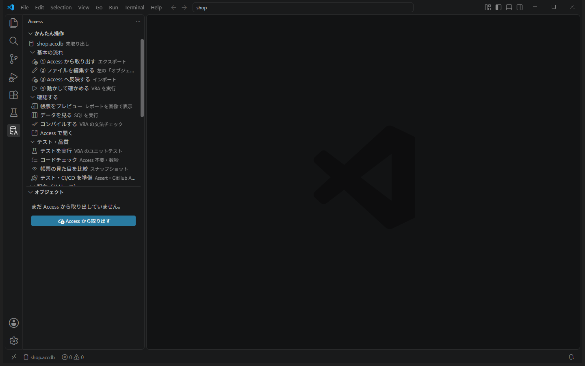
左に「かんたん操作」が表示され、一番上に
shop.accdb と出ている。うまくいかないとき
- Access アイコンが出ない → 再読み込み（Reload Window）をもう一度
- サンプルが作れない → Microsoft Access がインストールされているか確認。「その他」→「ログを表示」に原因が出ます
1. 取り出して中身を見る 5 分
ゴール：Access の中身をファイルに取り出し、どんなファイルになるかを見る。
- 「① Access から取り出す」を押す数秒で終わり、右下に「エクスポート完了」と出ます。
shop.accdbの隣にshop.accdb.srcフォルダができました。 - 「オブジェクト」の一覧を見るモジュール・フォーム・レポート・クエリ・テーブルに分かれて並んでいます。
- いくつか開いてみるクリックすると右側に開きます。
modMain… いつもの VBA です。関数の上に「▶ Access で実行」が出ていますqryOrderList… クエリの SQL ですrptOrders… 帳票の設計図です。項目ごとに位置や大きさが数字で書かれています- テーブルの
Orders… 項目名や型の一覧です（見るだけのファイル）
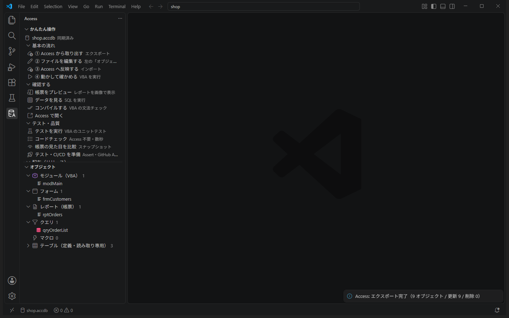
「オブジェクト」に、モジュール 1・フォーム 1・レポート 1・クエリ 1・テーブル 3 が並んでいる。
2. はじめての関数 10 分
ゴール：新しいモジュールに関数を書き、Access に反映して実行する。
- 新しいモジュールのファイルを作る左上のファイルのアイコン（エクスプローラー）を押し、
shop.accdb.src→modulesフォルダを右クリック →［新しいファイル］→modTax.basと入力して Enter。
ファイル名（.basを除いた部分）がそのままモジュール名になります。 - 次のコードを書いて保存（Ctrl+S）
左の Access アイコンに戻ると、Option Compare Database Option Explicit ' 税込金額（消費税 10%、1 円未満切り捨て） Public Function TaxIncluded(ByVal price As Currency) As Currency TaxIncluded = Int(price * 1.1) End FunctionmodTaxに「＋ 新規（未反映）」と出ています。画面の一番下にも、まだ反映していない数が表示されます。 - 「③ Access へ反映する」を押す右下に「インポート 1 件 / コンパイル OK」と出れば成功です。
- 関数の上の「▶ Access で実行」を押す引数の入力欄が出るので
100と入力して Enter。右下に TaxIncluded → 110 と出ます。 - もう一度、今度は
99で実行99 × 1.1 = 108.9 なので、切り捨てて 108 になります。
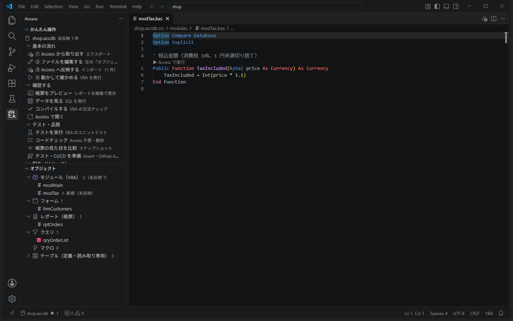
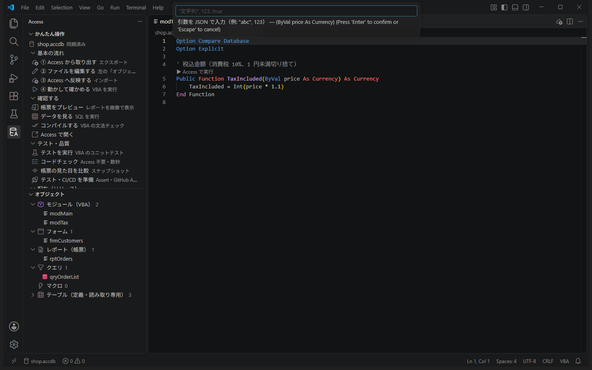
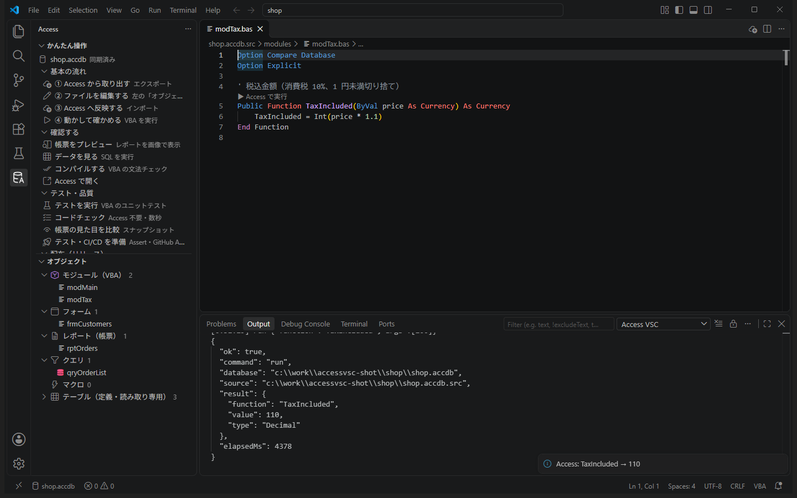
100 で実行すると 110、99 で実行すると 108 が返ってくる。
うまくいかないとき
- 「データベースが Access などで開かれています」 → Access の画面で shop.accdb を開いていたら閉じる
- 「▶ Access で実行」が出ない → ファイル名の拡張子が
.basか、modulesフォルダの中かを確認 - 文字列を渡したいときは
"山田"のようにダブルクォートで囲みます
3. わざと間違えてみる 10 分
ゴール：コンパイル エラーと実行時エラーが、どこにどう表示されるかを知る。
コンパイル エラー（書き間違い）
- 変数名を間違える
price * 1.1をprise * 1.1に書き換えて保存。 - 「③ Access へ反映する」その行に赤い波線が付き、右下に「コンパイル エラー: 変数が定義されていません。（modTax.bas の 6 行目）」と出ます。
- 元に戻して、もう一度反映「コンパイル OK」に戻れば大丈夫です。
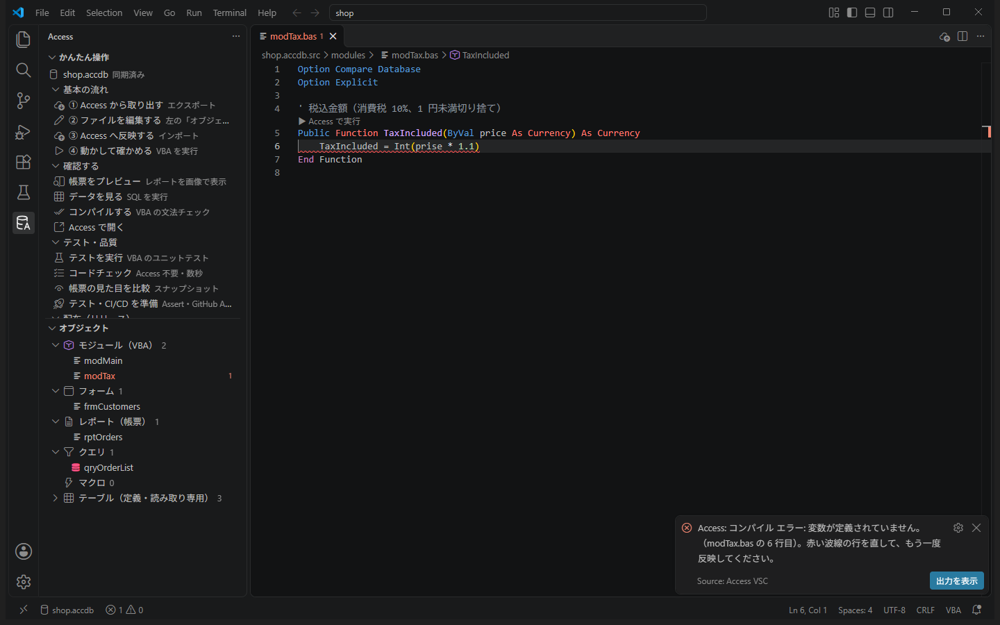
実行時エラー（動かしたときのエラー）
modTax.basの最後に、単価を求める関数を足して保存' 単価（金額 ÷ 数量） Public Function UnitPrice(ByVal amount As Currency, ByVal qty As Long) As Currency UnitPrice = amount / qty End Function- 反映して、
UnitPriceを引数1000, 0で実行0 で割ったので、割り算の行に赤い波線が付き、「実行時エラー '11': 0 で除算しました。」と出ます。
（Access の画面だとエラーのダイアログで止まるところですが、自動で閉じてエラーの場所を教えてくれます。） - 0 のときは 0 を返すように直す
保存 → 反映 → 同じ引数で実行すると、0 が返ります。Public Function UnitPrice(ByVal amount As Currency, ByVal qty As Long) As Currency If qty = 0 Then UnitPrice = 0 Exit Function End If UnitPrice = amount / qty End Function
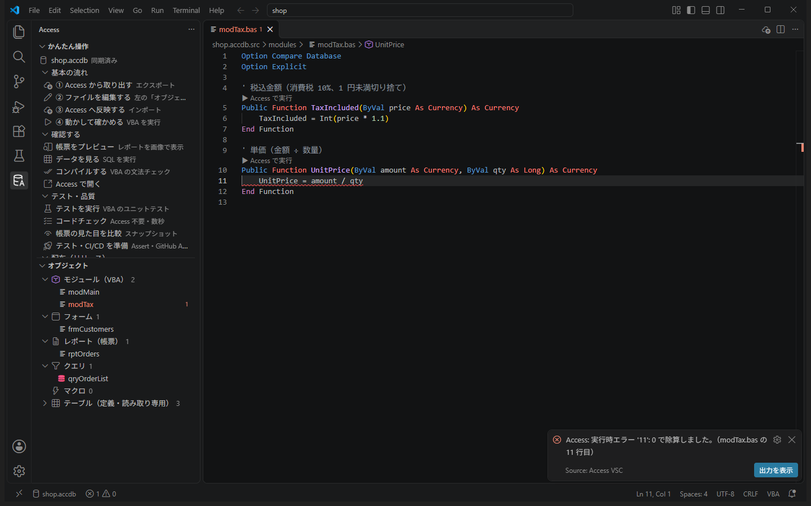
コンパイル エラーは「反映したとき」、実行時エラーは「実行したとき」に、どちらも該当の行に赤い波線で出ることがわかった。
4. データを見る・クエリを作る 10 分
ゴール：テーブルの中身を確認し、新しいクエリを SQL で作って動かす。
- テーブルの中身を見る「オブジェクト」→「テーブル」を開き、
Ordersにマウスを乗せて右端の ▶ を押すと、受注データが表で表示されます。 - 新しいクエリのファイルを作る
queriesフォルダにqryCustomerTotal.sqlを作り、次を書いて保存。SELECT c.CustomerName, Sum(p.Price * o.Qty) AS Total FROM (Orders AS o INNER JOIN Customers AS c ON o.CustomerID = c.ID) INNER JOIN Products AS p ON o.ProductID = p.ID GROUP BY c.CustomerName ORDER BY Sum(p.Price * o.Qty) DESC; - 「③ Access へ反映する」Access に
qryCustomerTotalというクエリができます。 - クエリの ▶ で実行顧客ごとの売上合計が、多い順に表示されます。1 位は 佐藤工業（8,910 円） のはずです。
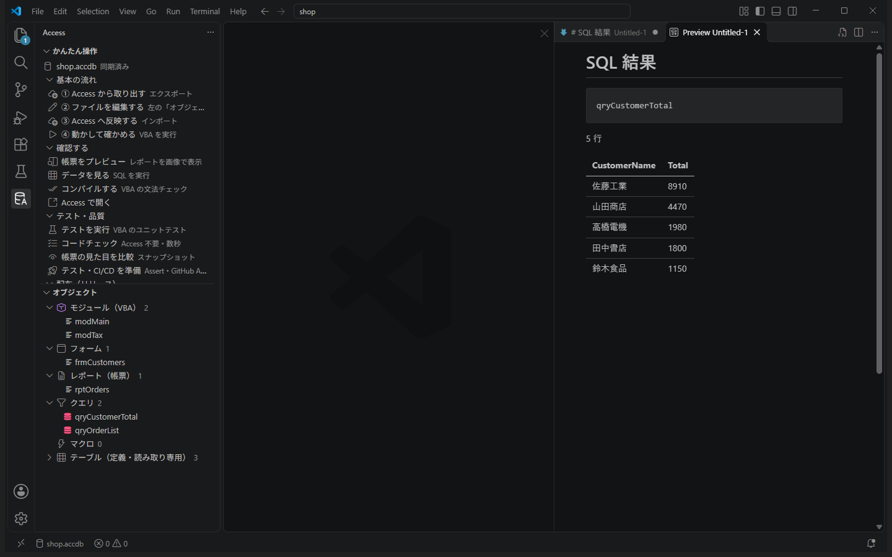
佐藤工業 8910、山田商店 4470、高橋電機 1980、田中書店 1800、鈴木食品 1150 の順に表示される。
データは書き換わりませんここで実行できるのは、データを読むだけの SELECT です。
.sql を開いたときに上に出る「▶ この SQL を実行」でも、保存前に試せます。5. 帳票を直す 15 分
ゴール：受注一覧の帳票で、タイトルを変え、商品の列を広げる。重なったら直す。
- 今の帳票を見る「オブジェクト」→「レポート」の
rptOrdersにあるプレビューボタン（目のアイコン）を押すと、印刷イメージが画像で表示されます。 - レポートのファイルを開く
rptOrdersをクリック。Begin LabelやBegin TextBoxのかたまりが 1 つの項目で、Left（左からの位置）・Width（幅）などが数字で書かれています。単位は twip で、1 cm = 567 です。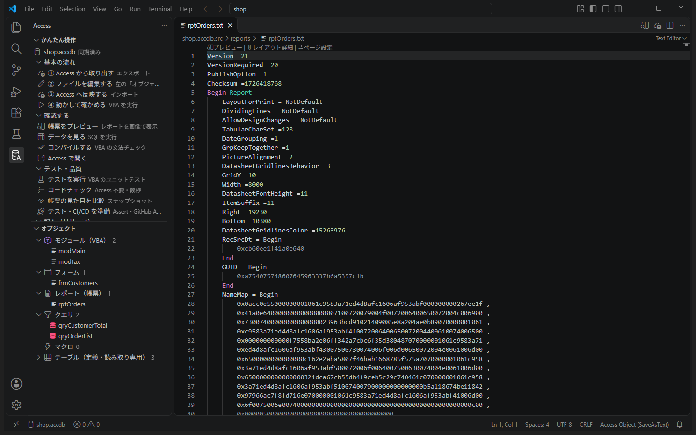
レポートのファイル。先頭にプレビューなどのボタンが出ます。 - タイトルを変えるCtrl+F で
受注一覧を探し、Caption ="受注一覧"をCaption ="受注一覧（2026年4月）"に変えます。 - 商品の列を広げるCtrl+F で
Name ="lblProductName"（見出し）を探します。そのかたまり（すぐ上のBegin Labelから下）の中にあるWidth =1700をWidth =2400に変えます。同じようにName ="txtProductName"（中身。Begin TextBoxのかたまり）のWidth =1700も2400に変えて保存。 - 反映してプレビュー上に黄色い枠で「txtProductName と txtQty が重なっています」と出ます。商品の列を広げたので、右隣の数量の列にかぶってしまいました。
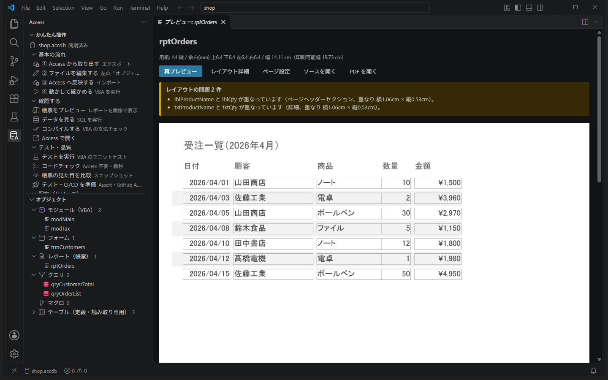
- 右の列をずらす数量（
lblQtyとtxtQty）のLeft =5800をLeft =6500に、金額（lblAmountとtxtAmount）のLeft =6700をLeft =7400に変えます。 - 帳票全体の幅も広げるファイルの最初のほう（
Begin Reportのすぐ下）にあるWidth =8000をWidth =8800に変えて保存。
（忘れても Access が自動で広げますが、保存したときのコードチェックで「幅を超えています」と注意が出ます。） - 反映してプレビュー「レイアウトの問題は見つかりませんでした」と出れば完成です。
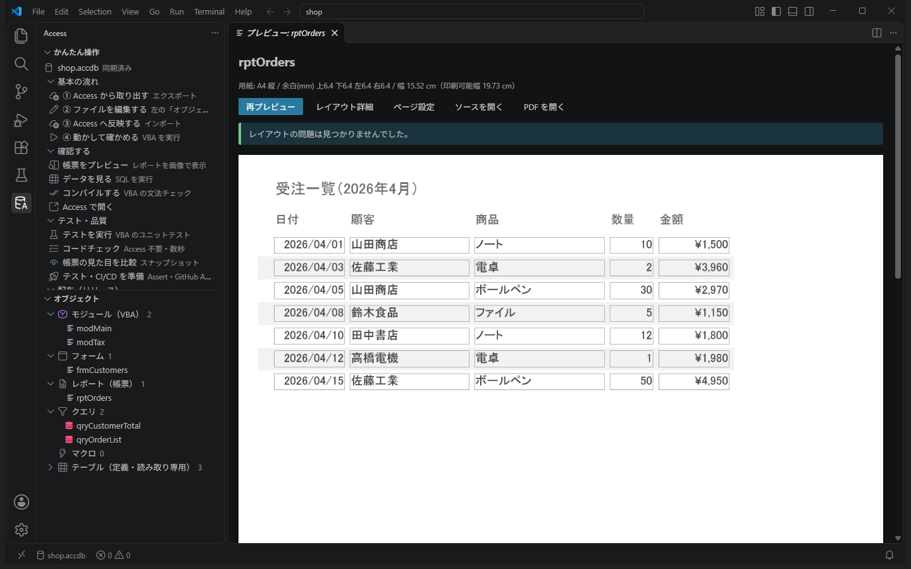
プレビューでタイトルが「受注一覧（2026年4月）」になり、商品名が広く、問題の表示がない。
（やってみよう）用紙を横向きに
rptOrders を右クリック →「ページ設定」→ 用紙 A4 → 向き「横」→ 余白は空欄で Enter。用紙の設定はテキストでは変えられないので、この画面を使います。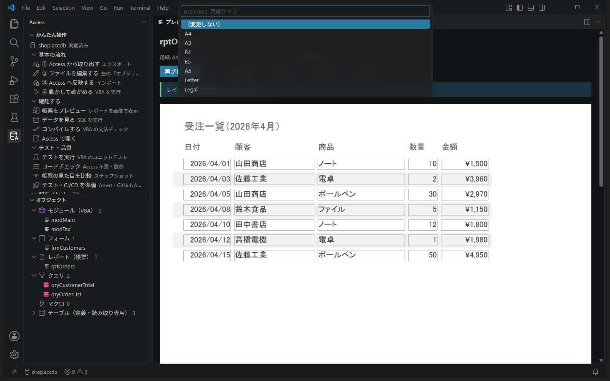
6. テストを書く 10 分
ゴール：関数が正しいことを、自動で確かめるテストを書いて動かす。
- 「テスト・品質」→「テスト・CI/CD を準備」「git を始めますか？」と聞かれたら［git を始める］。テスト用の
Assertモジュールとテストの例が追加されます。最後に「反映してテストしますか？」と聞かれたら［反映してテスト］。例のテストがすべて ✔ になります。 - 自分のテストを書く
modulesにTest_Tax.basを作り、次を書いて保存。
名前がOption Compare Database Option Explicit Public Sub Test_TaxIncluded_100yen() Assert.AreEqual 110, TaxIncluded(100) End Sub Public Sub Test_TaxIncluded_RoundDown() Assert.AreEqual 108, TaxIncluded(99), "1 円未満は切り捨て" End Sub Public Sub Test_UnitPrice_ZeroQty() Assert.AreEqual 0, UnitPrice(1000, 0) End SubTest_で始まる、引数なしのPublic Subがテストになります。 - 反映して「テストを実行」左に「テスト」の画面が開き、全部 ✔ になります。
- わざと失敗させてみる
108を109に変えて保存 → 反映 → テストを実行。そのテストが ✘ になり、「1 円未満は切り捨て - 期待値 109 (Integer) / 実際 108 (Currency)」と表示されます。確認したら元に戻します。
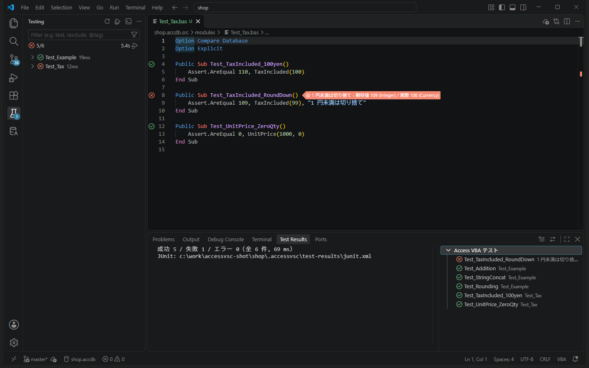
テストが ✔ になり、わざと間違えると ✘ になって理由が表示される。
テストはコピーの上で動きますテストは、データベースのコピーの上で実行されます。テストの中でデータを書き換えても、元の shop.accdb は変わりません。
7. AI に頼む 15 分
ゴール：AI（Claude Code）に修正を頼み、AI が反映・テストまで自分で行う様子を見る。
- 「AI と使う」→「AI エージェント連携を設定」［Claude Code］にチェックを入れて OK。
.mcp.jsonとCLAUDE.md（AI への作業手順書）が作られます。 - Claude Code を開き直す「access」というツールの使用を許可するか聞かれたら［許可］。
- チャットで頼む
頼み方の例modTax に、税込金額から税抜金額を求める関数 TaxExcluded を追加して（1 円未満切り捨て）。Test_Tax にテストも追加して、テストがすべて通ることまで確認して。AI は、ファイルを編集 → Access に反映 → コンパイル エラーがあれば直す → テストを実行、を自分で繰り返し、結果を報告します。
- 何が変わったかを確かめる左の［ソース管理］（枝分かれのアイコン）を開くと、変わったファイルが並びます。クリックすると、変更前と変更後が左右に並んで表示されます。
- 帳票も頼んでみる
頼み方の例rptOrders の数量の列の左に「単価」の列（Products の Price）を追加して。プレビューで重なりやはみ出しがないことを確認して。
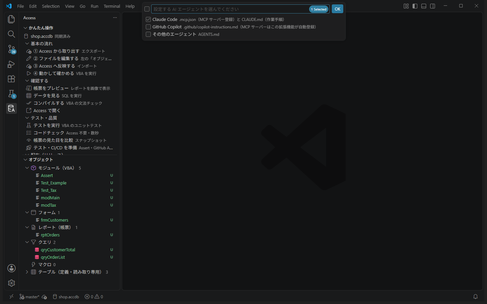
AI が関数とテストを追加し、テストが通ったと報告した。［ソース管理］で変更内容を確認できた。
AI に頼むときのコツ「何を」「どうしたいか」に加えて、「どう確かめるか」（テストを通す、プレビューで確認する、など）まで書くと、AI が自分で確かめてくれます。
8. 仕上げと次の一歩 5 分
- 帳票の見た目を記録する「テスト・品質」→「帳票の見た目を比較」。初回は「基準なし」なので、画像を確認して［この見た目を基準にする］。今後、帳票の見た目が変わると赤い差分で教えてくれます。
- 変更を記録（コミット）する［ソース管理］の上の入力欄に「税込計算と帳票の修正」などと書いて［コミット］。ここまでの作業が履歴に残ります。
（初めて git を使う場合は名前とメールアドレスを聞かれることがあります。ターミナルでgit config --global user.name "山田 太郎"とgit config --global user.email "you@example.com"を実行してください。）
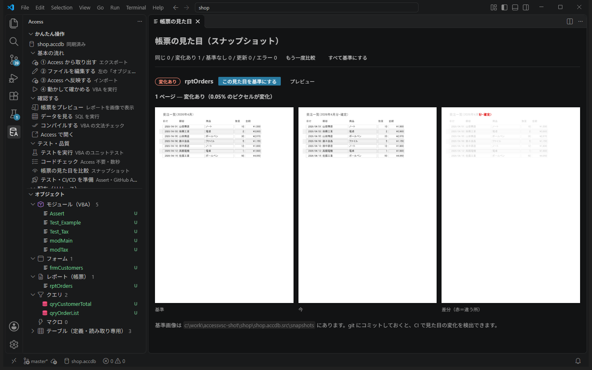
おつかれさまでした！
ここまでで、Access VSC の主な機能を一通り体験しました。
| やったこと | もっと知るには |
|---|---|
| 取り出す・編集・反映・実行 | 学習コース 初級「毎日の流れ」 |
| エラーの読み方 | 初級「エラーと付き合う」 |
| 帳票のレイアウト | 中級「帳票レイアウトの考え方」 |
| AI に頼む | 中級「AI と協働する」 |
| テスト・git | 中級「git」・「テストの考え方」 |
次は、自分の仕事のデータベースで。まず学習コース 初級「自分のデータベースで始める」を読んでから始めてください（バックアップの取り方など、気をつけることをまとめています）。